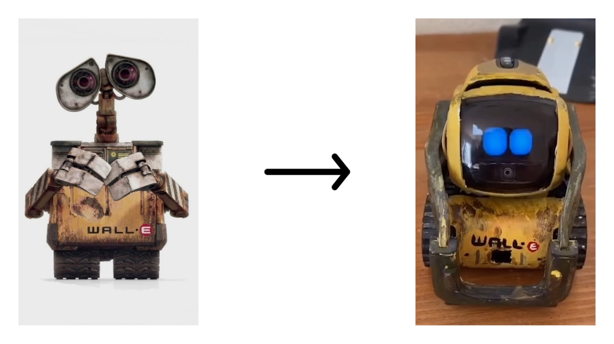

Voor deze opdracht moesten we de Homeostatische model toepassen op een van de volgende producten: een fiets, een printer, een automatische schuifdeur en een Easy Order bestelautomaat bij McDonalds.
Ik heb gekozen voor een fiets. Het doel van een fiets is om mensen veilig van de ene naar de andere locatie te vervoeren. Om dit zo veilig mogelijk te kunnen doen, moet een fiets bepaalde onderdelen hebben. Een fiets heeft bijvoorbeeld 's avonds licht nodig om ongelukken te voorkomen. Daarom is het erg belangrijk dat een fiets in het bezit is van een fietslamp.
Om ervoor te zorgen dat de fietslamp goed licht geeft, heeft een fiets een Dynamo nodig. De dynamo is verbonden aan de fietsband. De dynamo komt in werking op het moment dat het wiel begint te werken. Als het wiel draait, draait het asje van de dynamo mee. Aan dat asje zitten magneten en de bewegen langs een spoel. De spoel is een spiraalvormige koperdraad. De bewegende magneet zorgt ervoor dat er stroom komt op de spoel en dat zorgt ervoor dat het fietslamp begint te branden (NEMO Science Museum, 2021) .
Op het moment dat je steeds langzamer fietst dan begint zal het licht doffer worden en als je stop dan zal het licht uit gaan. Om het lampje in werking te houden moet het dynamo meedraaien met het wiel.
Kortom, als ik het Homeostatische model toepas op een veilige fiets, is het van groot belang dat een fiets 's avonds goed licht geeft. Om ervoor te zorgen dat de fiets licht geeft, is de beweging van de dynamo erg belangrijk zodat de fiets het nodige licht geeft voor een veilige omgeving voor de bestuurder. Door het bewegende asje van de dynamo bespaart de dynamo energie en stuurt deze naar de fietslamp. De fietslamp neemt de energie op en geeft licht. Dat licht zorgt ervoor dat het een veilige, goed werkende fiets is.
Tijdens het zoeken naar kunstmatige wezens vond ik een hele leuke kleine robot die op Wall-E leek. Nou is Wall-E een van mijn favoriete animaties en toen ik deze robot zag, werd ik er verliefd op.

Deze robot heet Vector en vertoonde soortgelijke emoties als een mens. Zijn ogen vertellen of hij blij, boos of nieuwsgierig is. Hij is zich bewust van zijn omgeving en herkent mensen of objecten door beeld en geluid. Verder kan vector foto's maken, het weer melden en herinneringen aan je tonen en hij is aanraakgevoelig. Je kunt met hem spelen, dansen of gewoon praten. Als zijn batterij leeg is, keert hij terug naar zijn speciale plek en gaat slapen. Als je hem roept, wordt hij wakker.
Kortom, Vector is een leuke kleine assistent. Vector lijkt een beetje op Alexa, Siri en Google Assistant, maar is speelser en is constant in beweging.
Bron: https://www.digitaldreamlabs.com/